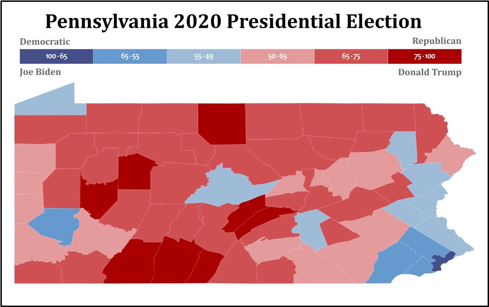
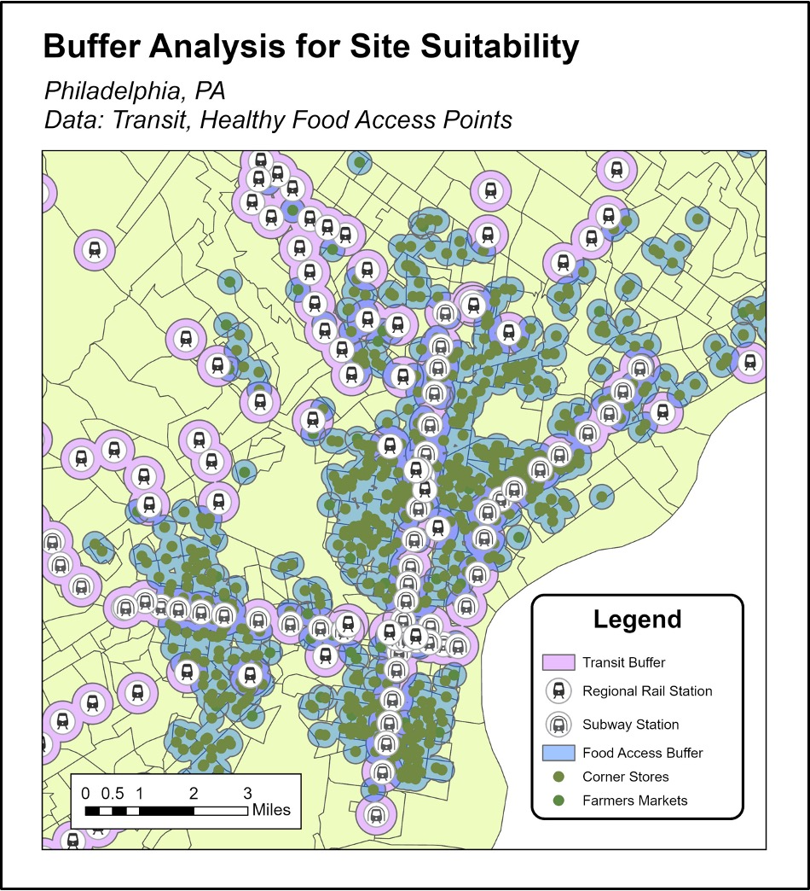
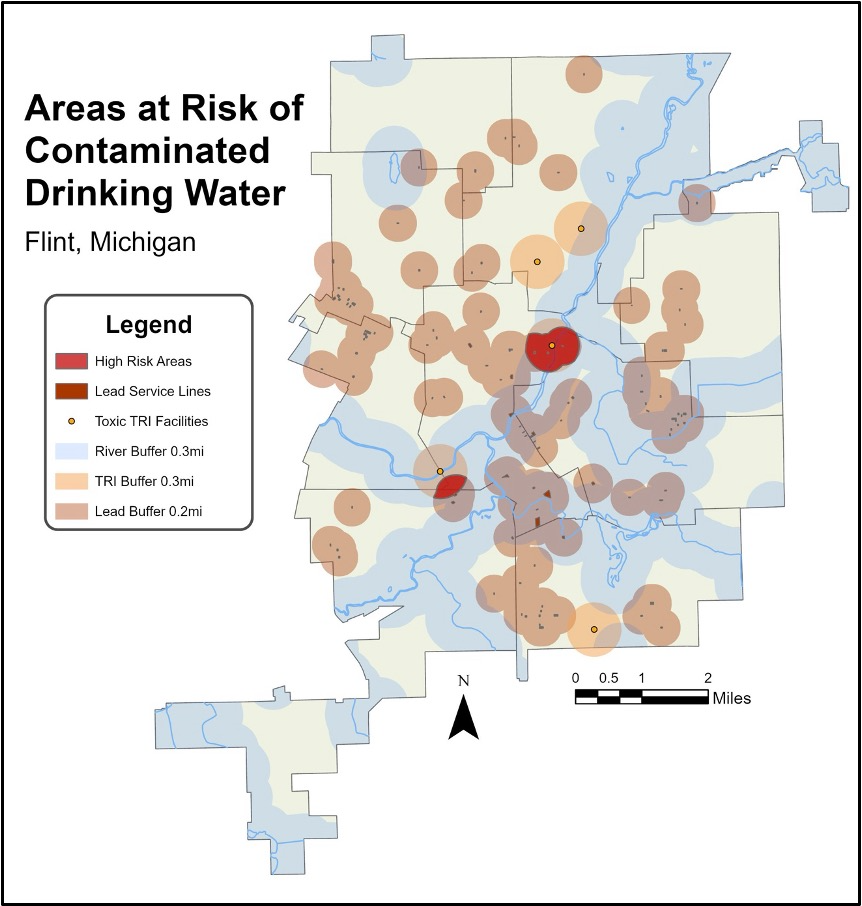

Fundamentals of GIS – Map Showcase
Map 1: Pennsylvania 2020 Presidential Election Results by County

This map shows how voting patterns varied across Pennsylvania counties in the 2020 election, helping solve the problem of visualizing regional political differences. By grouping counties into six vote-share categories, it highlights strong Republican support in rural areas and stronger Democratic support in urban regions like Philadelphia and Pittsburgh. The graduated red and blue color scheme makes it easy to see not just who won, but the intensity of support. Overall, the map reveals clear geographic polarization across the state. The analysis used attribute joins to connect voting data to county boundaries, the Field Calculator to classify vote percentages, and choropleth symbology to display results.
Map 2: Buffer and Overlay Analysis for Site Suitability

This map identifies the most suitable locations for a new healthy food store in Philadelphia by solving the problem of limited access to healthy food options. The analysis focuses on areas that meet key criteria: being within an empowerment zone, close to public transportation, and not near existing farmers markets or healthy corner stores. By combining these spatial conditions, the map highlights underserved areas where a new store would have the greatest impact. The result helps guide planning decisions and supports efforts to improve food accessibility. The analysis used buffer operations to measure proximity, dissolve to merge overlapping areas, and overlay tools such as intersect and erase to refine suitable locations, along with consistent coordinate system projection and multipart to singlepart conversion for accurate processing.
Map 3: Flint, Michigan High-Risk Water Exposure Zones

This map identifies areas in Flint most at risk of contaminated drinking water by solving the problem of where multiple environmental hazards overlap. It combines buffers around high-emission TRI facilities, rivers, and lead service lines to highlight zones where all three risks intersect. These overlapping areas represent the highest exposure risk and help guide where intervention is most needed. The map simplifies complex environmental data into a clear visual for decision-making. Key GIS tools included buffer analysis, attribute filtering, spatial intersect to find overlaps, projection into a consistent coordinate system, and clipping to Flint’s boundaries.